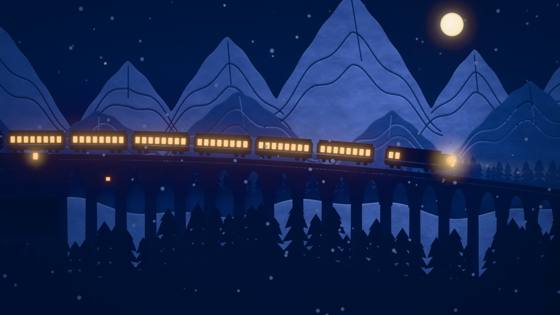
Paper-cut Lightbox
East Asian Traditions
An old night train makes its last run, from a snowy mountain halt through a long tunnel to the sea, its lit windows going out one by one at the end of the line.
The whole list
Every style you can make a film in with Claude and a free style library. The 10 from the reel come first, then all 66, grouped by family.
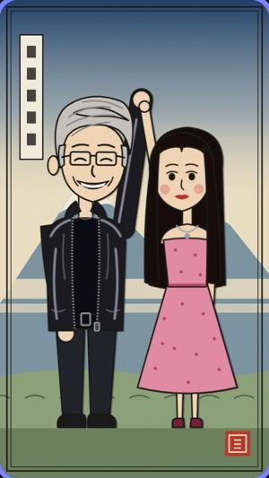
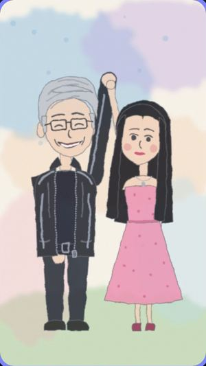
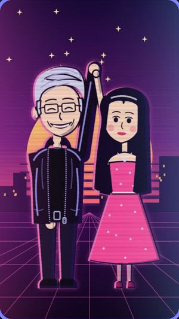
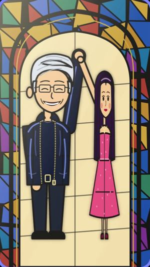
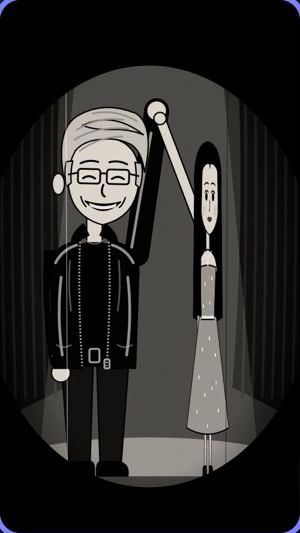
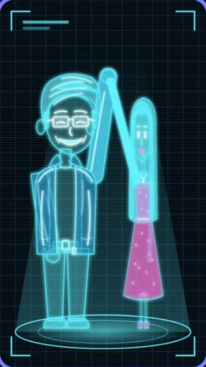
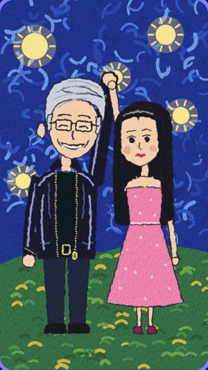
Install it from claude.com/claude-code. You also need Node 20+, ffmpeg 7+ and Python 3.11+.
Lemo-Opuscar is free and open source. Run these two lines:
claude plugin marketplace add lemomo-ai/lemo-opuscarclaude plugin install lemo-opuscar@lemolabName your topic and a style from this page:
Make a 30-second film about my morning chai in the Ukiyo-e style
East Asian Traditions
An old night train makes its last run, from a snowy mountain halt through a long tunnel to the sea, its lit windows going out one by one at the end of the line.
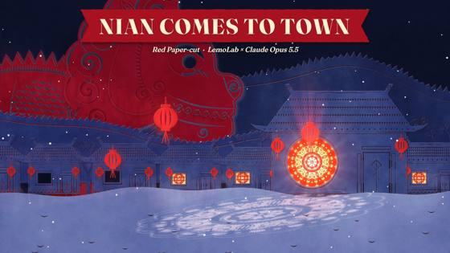
East Asian Traditions
On New Year's Eve the beast Nian comes to town, and one girl's giant paper-cut lights up the village to scare it off.
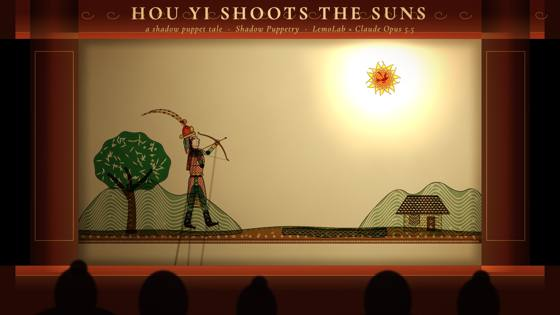
East Asian Traditions
Ten suns scorch the earth until the archer Hou Yi draws his bow, told with leather puppets on a lit screen.
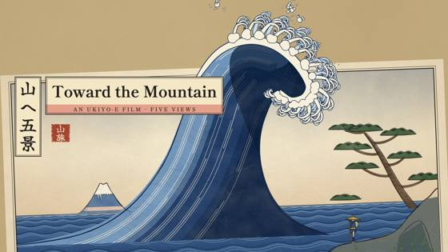
East Asian Traditions
A traveller walks toward a distant mountain; every shot is a woodblock print, a great wave at the climax, the mountain and the whole scroll at the end.
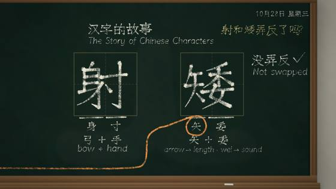
Hand-drawn & Painting
Chalk writes a popular claim about two characters, wipes it, and traces 射 back three thousand years.
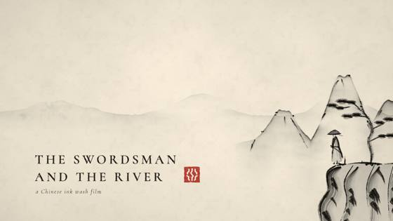
Hand-drawn & Painting
A swordsman crosses the river on the water and splits the current with a single stroke.
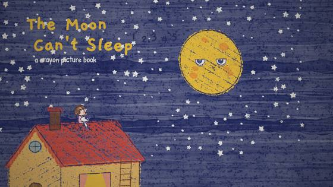
Hand-drawn & Painting
The moon can't sleep, so a little girl climbs onto the roof to sing it a lullaby.
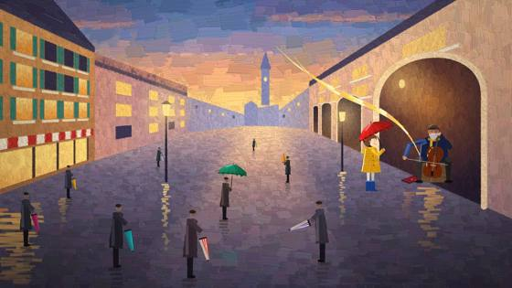
Hand-drawn & Painting
In a grey, rainy square one red umbrella opens, and a waltz paints the whole plaza in colour.
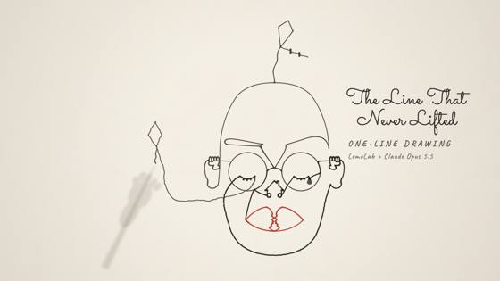
Hand-drawn & Painting
One unbroken line draws a whole life, then the pen passes to a child.
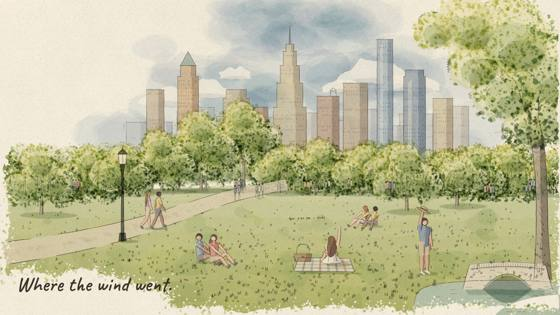
Hand-drawn & Painting
A park that is only a pen sketch; wherever the wind carries her straw hat, colour follows.
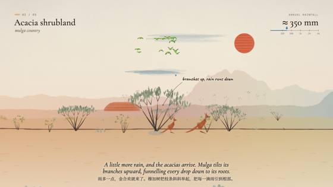
Hand-drawn & Painting
Follow the rain from Australia's red desert heart to its green coast in one unbroken painted walk.
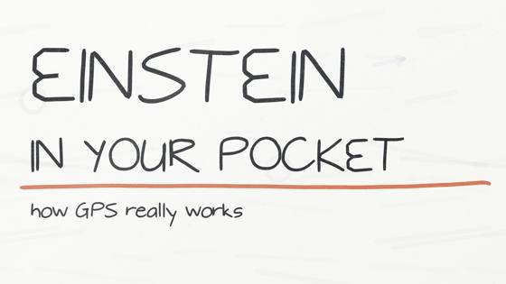
Hand-drawn & Painting
How your phone knows where you are: GPS, atomic clocks, and the 38 microseconds relativity adds every day.
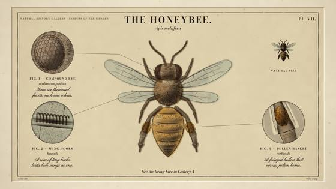
Print & Printmaking
A natural-history plate engraves itself: the burin cuts the copper, the bee builds up line by line, and a watercolour wash brings it to life.
Print & Printmaking
A chubby orange cat stands trial for testing gravity and 4 a.m. parkour, and walks free.
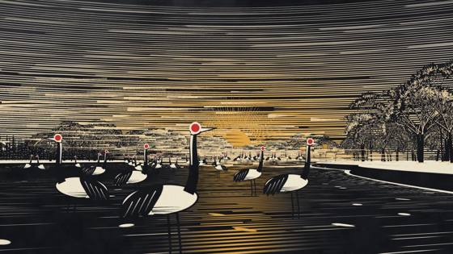
Print & Printmaking
Red-crowned cranes in a Hokkaido valley, one scratchboard take, counted back from 33 to 1,927.
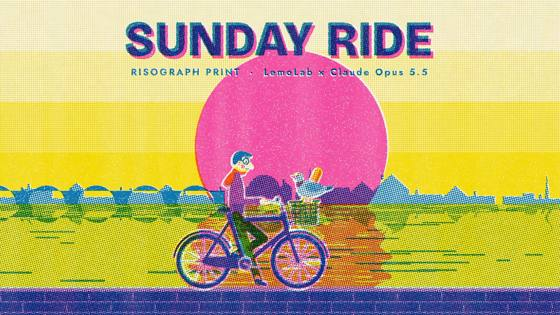
Print & Printmaking
A Sunday-morning bike ride through the city — bakery, park, riverside — each stop adding an ink until three misregistered plates overprint.
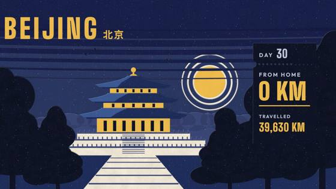
Print & Printmaking
A traveller crosses the world one full-bleed screen print at a time, a ticket stub counting the distance from home, until the far side turns into the way back.
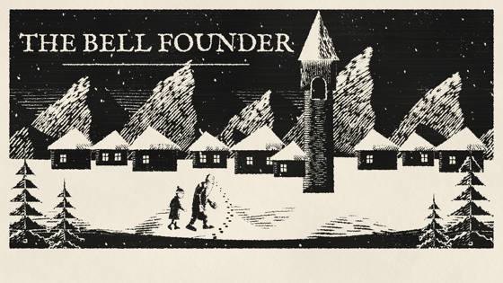
Print & Printmaking
A village spends a whole winter casting one bell; the first time it rings, the snow stops.
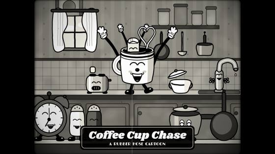
Cartoon & Anime
A coffee cup chases a runaway sugar cube around the kitchen, 1930s-cartoon style.
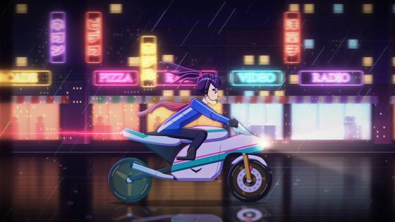
Cartoon & Anime
A courier girl rides through a rain-soaked neon city to deliver a tape before the dawn launch.
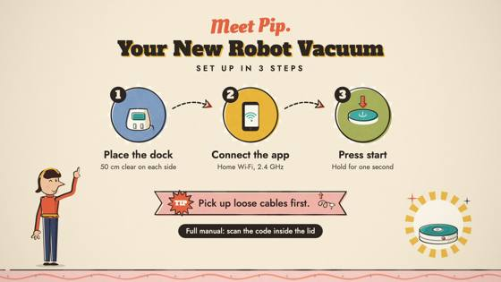
Cartoon & Anime
A robot vacuum set up in three steps, told like a 1950s classroom film.
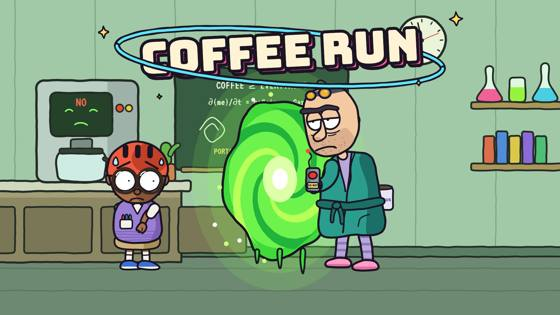
Cartoon & Anime
A jaded genius opens a portal just to buy coffee and tumbles through ever-stranger universes.
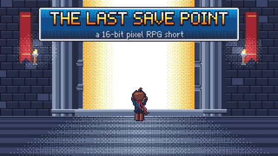
Games
At the final boss door a hero saves the game, and the save screen replays the whole journey.
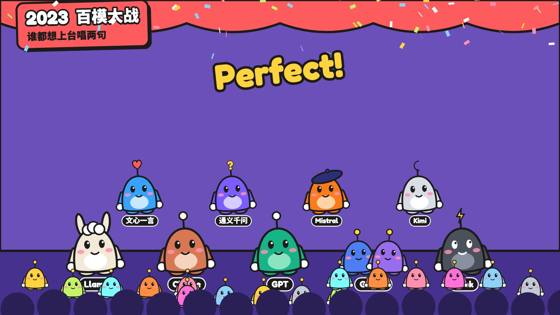
Games
The history of AI as a rhythm game: models take the stage on the beat, and a report card closes the show.
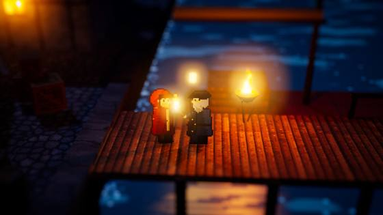
Games
The lighthouse goes dark; a girl carries the last flame through a night forest and up the storm cliffs.
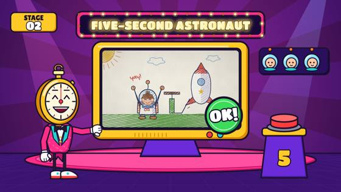
Games
A clumsy cadet survives a five-second boot camp, faster and faster, until the boss: landing home.
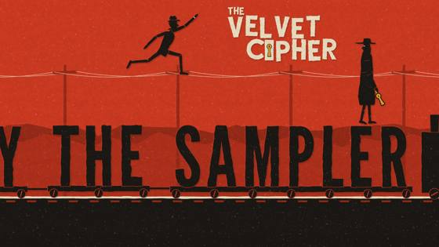
Graphic & Type
Opening titles for an imaginary 1964 spy film: a chase for a stolen key until the shapes lock into the title.
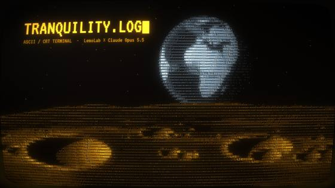
Graphic & Type
A moon-base AI wakes after forty years to a signal from Earth, and replies by drawing “home” in characters.
Graphic & Type
A grand hotel, 1930: a bellboy races lifts and revolving doors to deliver one letter before midnight.
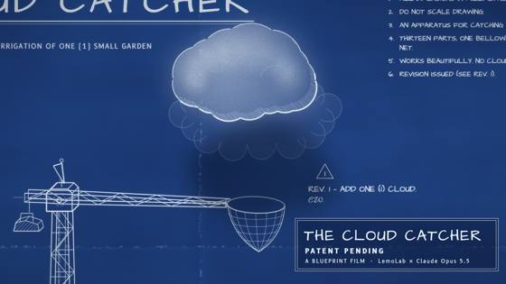
Graphic & Type
An inventor's blueprint draws, explodes and assembles a cloud-catching machine, and its revision cloud starts to rain.
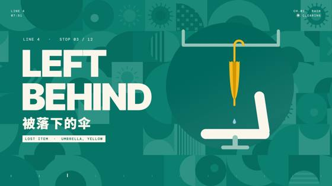
Graphic & Type
A yellow umbrella left on a bus waits out a sunny day on the lost-property shelf, then opens with 312 others when the storm comes back: objects, vehicles, weather and signs as beat-locked geometric pictograms.
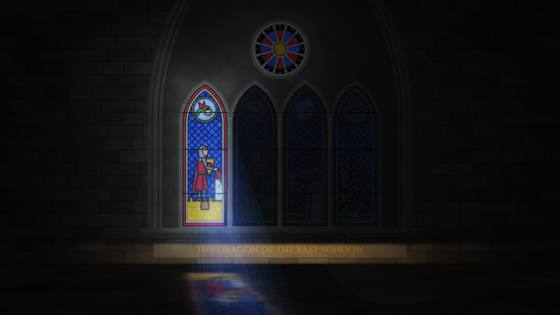
Graphic & Type
Sunlight crosses a cathedral window from dawn to dusk, waking each pane of a knight-and-dragon tale.
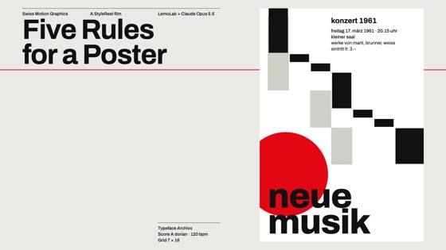
Graphic & Type
A concert poster lays itself out by five Swiss design rules; the fifth is to break just one.
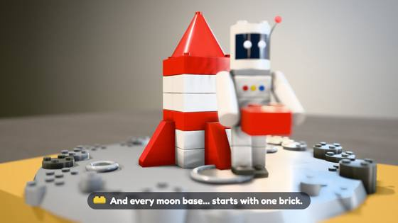
Materials & 3D
A brick astronaut builds a rocket from spare parts and flies to a brick moon.
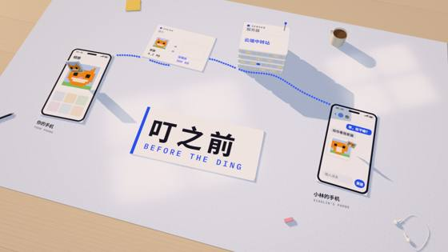
Materials & 3D
A cat photo hops across app cards on a sunlit desk, from one phone to a friend's.
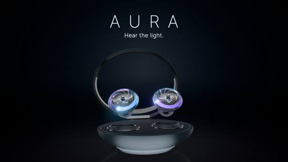
Materials & 3D
Unboxing and close-ups of Aura, fictional glass earbuds, in strip-light sweeps and caustics.
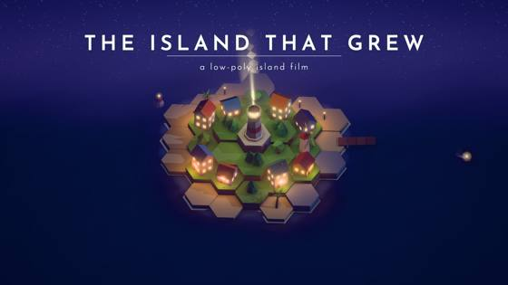
Materials & 3D
An island and its village grow tile by tile from an empty sea, each tile a note, into a starry night.
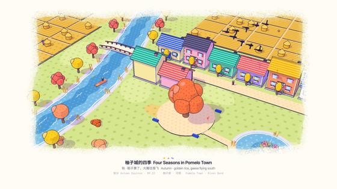
Materials & 3D
One river bend, four seasons, one take; each turns when the big tree squats and springs back.
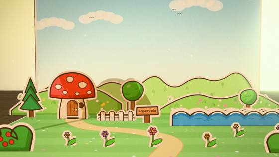
Materials & 3D
A pop-up book opens on a desk; a sprite named Pip adventures through paper worlds and jumps out into ours.
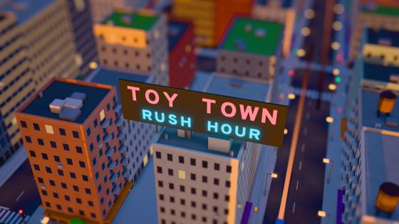
Materials & 3D
Morning rush hour in a town that looks like a model: traffic, trains and tiny people.
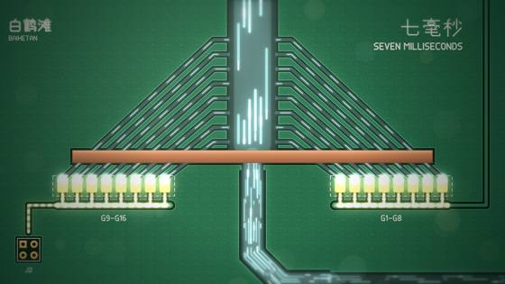
Information & Keynote
Rivers become copper traces as current runs 2,080 km from a dam to a phone charger.
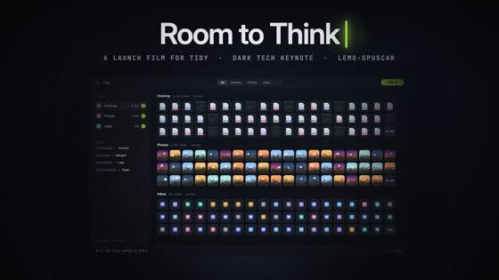
Information & Keynote
Launch film for Tidy, a fictional app: one buried cursor snaps hundreds of windows back into place.
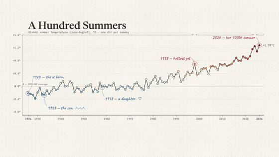
Information & Keynote
A hundred years of summer temperatures, where the chart itself tells the story.
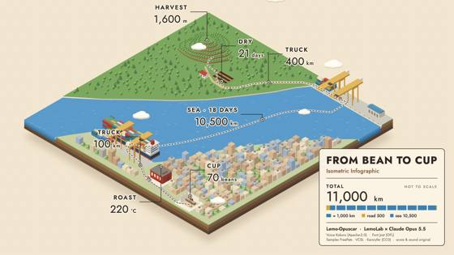
Information & Keynote
A coffee's journey from the plantation to your hands, across one isometric world.
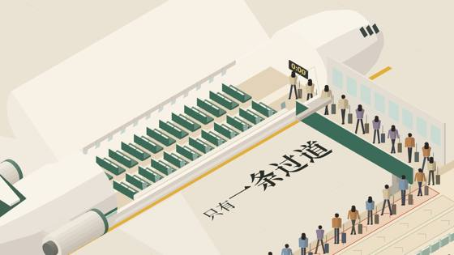
Information & Keynote
Travellers board an isometric plane, and the order shows why one way is nearly twice as fast.
Information & Keynote
Clawd hops out of the terminal into the Claude app and acts out plan mode and self-checks in one take.
Information & Keynote
An e-bike is scanned into a hologram; target boxes lock onto the battery, motor and brakes.
Information & Keynote
A printed metro map grows from one 6 km line in 1993 to 21 lines and 906 km.
Evidence Films
The telegram said 57 seconds; under a loupe, the Wrights' glass negatives and the archive say 59.
Evidence Films
Twelve years of wind and solar stacked as real plates, spiralling round a walnut dial until solar overtakes.
Evidence Films
Four bridge types are tested on one briefing wall, and the ship that must pass under picks the winner.
Evidence Films
Half an open-source keyboard comes apart in one orbit, down to the chip, then closes with its real dimensions.
Evidence Films
A laser survey strips the canopy off a Connecticut forest and finds 3.4 km of old farm walls.
Evidence Films
One continuous move from a liver slide to a single nucleus; two circles, counted pixel by pixel, differ 2.4 times in blue.
Evidence Films
A projector paints Rotterdam's white model layer by layer, from the 1940 gap to today's towers.
Evidence Films
A satellite follows the map to the Aral Sea and finds a desert; only the part someone dammed came back.
Edit & Documentary
1926: the papers say the Charleston will ruin America's knees; at Ford's own picnic the kids dance it anyway.
Edit & Documentary
Four AI stories from one week in a full on-air package: rundown, headline strap, price board, spec card.
Edit & Documentary
America lost 1.3 million bee colonies, yet the count rose 6 %: a news short that works with the sound off.
Edit & Documentary
The Empire State's 1931 brochure credits its builders; the site film and Hine's photos answer: 2,500 a day.
Edit & Documentary
The last minute of the Artemis II launch, uncut: one cell opens to nine, and they merge into one at ignition.
Edit & Documentary
Down 3–0 at half-time, Fenerbahçe scored three in 12 minutes: freeze, draw, split screen, shot map.
Edit & Documentary
One day in New York in time-lapse: rivers of light, a grid on the sixteenths, 1899 beside today.
Edit & Documentary
Newsreel, photos, testimony and the 1937 inquiry on one clock: five sources point to the same spot.
Cinema & Eras
A baker's boy chases a runaway loaf downhill, then breaks it in half for a hungry girl.
Cinema & Eras
A new night-shift hire films their first night in an endless yellow office, following the rules on the wall.
Launching 16 November
Cotsi is our Claude skill that teaches any topic, book or exam syllabus fast: the 20% of ideas that unlock the other 80%, taught by the characters you love, with quick checks so it sticks.